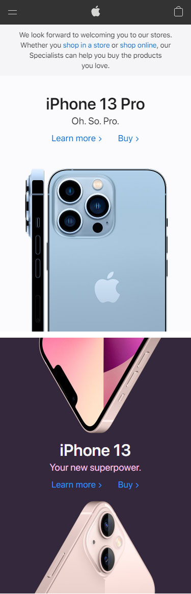
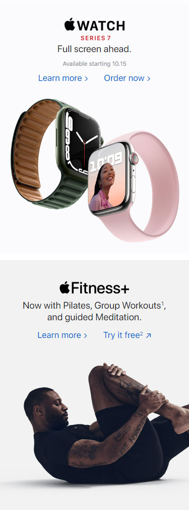
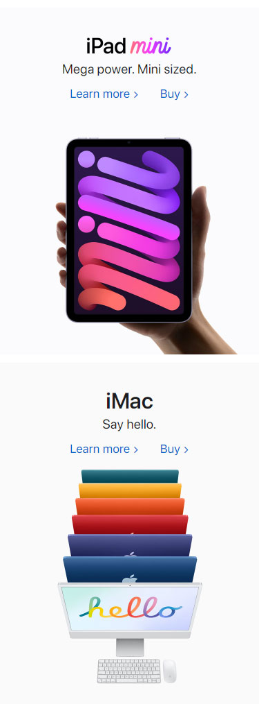
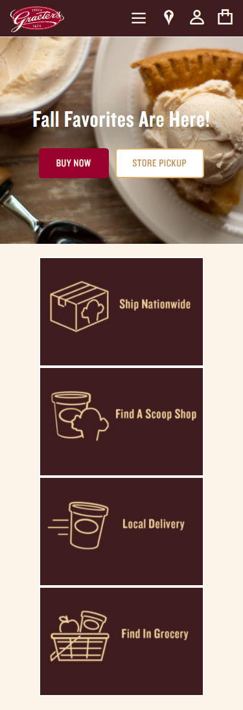
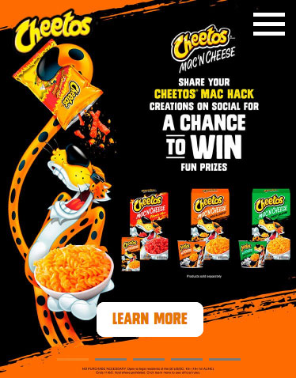
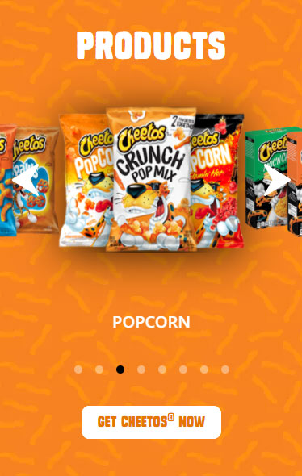
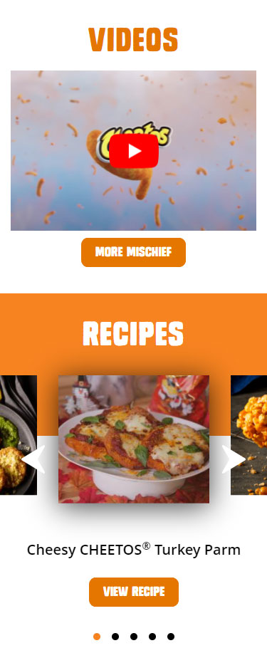

White Space & Clean Design
Apple
WebsiteApple is known for having a very clean design with all of their products. Their website reflects that. It's very minimalistic, while also showing off their products fluidly. The only things taking up space are the titles of the products, brief details, and the images of the products themselves. There is plenty of whitespace and contrast to draw attention to the products and make sure you understand exactly what they want you to buy.
  Repetition
Graeter's
WebsiteIce Cream is the best. No debate. But when you have tons of deliscious flavors to sell, it's important that your customers understand all of the options they have to choose from, while also knowing they are all flavors of the same type of treat. Graeter's Ice Cream website uses repetition in the design of featuring their flavors of ice cream. Repetition is used in the font choices throughout the site, the color scheme, and the images used for the flavors. They are all scoops ready to be put in your cone.
Contrast
Cheetos
WebsiteAlthough Cheetos might be viewed as not the most professional snack, their website is designed using the 'professional' design principles. They use contrast well, so you can see their titles, text and products easily, despite the bright colors all over the site. Makes you wanna stuff your face by the handfull.
  